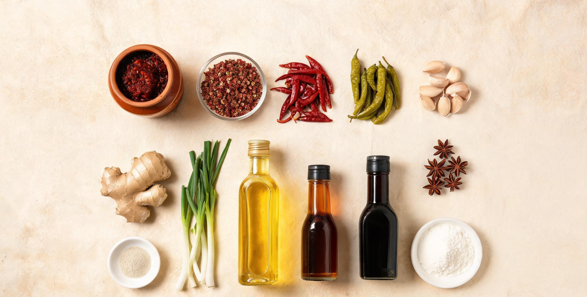

00 / 开始之前川菜不是「多放辣椒」
很多人在家做川菜，第一反应是「辣椒多、油多、盐多」。结果端上桌只有一味死辣，吃起来累，吃完口干。
真正的川味是复合味：辣要有香托着，麻要有鲜垫着，甜酸要能把咸味「提」起来。
川菜常用的味型有二十多种，家常菜真正会用到的其实只有四个：家常味、鱼香味、荔枝味（宫保）、麻辣味。
把这四个比例记住，再掌握「炒豆瓣出红油」这一个动作，你已经能覆盖八成家常川菜。
32川菜传统味型数量
家常只用其中四类
6本教程精练菜品
覆盖炒、烧、煸、水煮
21天渐进式训练
每天 20–40 分钟
学习顺序很重要。不要一上来就做水煮肉片。先练「炒豆瓣」，再练「上浆滑炒」，最后练「勾芡」。
这三件事决定 80% 的成败，味道反而是最后一步。
01 / 备料先搭一个「川味调味架」
川菜的味道来自调料之间的配合，不是某一种「秘方」。下面 12 样，是家常川菜的完整基本盘。
买齐它们，比买一口好锅更重要。

川味基本盘：豆瓣定色香，花椒定麻，泡椒定鱼香，菜籽油定底味。
01郫县豆瓣川菜灵魂。选红油豆瓣，用前剁细，小火炒到吐红油，否则有生豆瓣味。
02花椒红花椒香、青花椒麻更清冽。花椒面一定最后撒，久煮会发苦。
03干辣椒二荆条香而不燥，子弹头辣。剪段去籽，小火焙香再下锅。
04泡椒 / 泡姜鱼香味的来源。泡椒剁细，酸香才出得来，不能用新鲜辣椒代替。
05姜、葱、蒜去腥增香三件套。姜蒜剁末，葱白葱绿分开下锅。
06菜籽油川菜香气的地基。烧到冒青烟再降温使用，去掉生油味。
07料酒 / 醪糟去腥。醪糟还能让烧菜回甜、汤汁更浓。
08生抽 / 老抽生抽调味，老抽只上色。两者都咸，放盐前先算进去。
09醋保宁醋或香醋。鱼香、宫保靠它提香，出锅前沿锅边淋最香。
10白糖不是为甜，是为「和味」。少量糖能让辣不呛、咸不涩。
11淀粉上浆锁水、勾芡收汁。红薯淀粉更黏，玉米淀粉更透。
12白胡椒粉川菜去腥的隐形选手，汤菜、肉馅、滑炒都用得上。
3 + 3 + 3 记忆法：底味三样（盐 / 生抽 / 糖）、香味三样（豆瓣 / 姜蒜 / 葱）、
麻香三样（花椒 / 干辣椒 / 泡椒）。任何一道家常川菜，基本都在这九样里组合。
02 / 手上功夫三个动作，决定八成成败
川菜的后厨有个说法：「三分调味，七分火候」。下面三个动作，看起来简单，但每一个都有明确的判断标准，
练的时候盯着标准练，而不是盯着时间。
① 炝锅：把豆瓣炒出红油
冷锅下菜籽油，中火烧到油面起细纹，转小火下剁细的豆瓣，慢慢推炒 40–60 秒。
标准是：油色变红亮、豆瓣酥香不粘锅、闻到酱香而不是生豆味。
失败信号：油还是暗红色 → 火太小或时间不够；发苦发黑 → 火太大或豆瓣没剁细。
② 上浆：让肉嫩而不柴
肉丝 / 肉片先加盐、料酒、白胡椒抓出黏性，再分次加葱姜水，让肉「喝」进水，
最后加淀粉抓匀、封一层油。顺序不能乱：先调味，再补水，最后锁水。
下锅用「热锅凉油」，四五成油温（筷子插入有小泡）滑散，肉变白立刻盛出，最后回锅调味。
③ 勾芡：让味道挂在食材上
水淀粉分两到三次淋入，每次都等汤汁重新沸腾再加下一次。
目标是「二流芡」——汤汁能薄薄包住食材，盘底不淌水。出锅前淋半勺明油，颜色立刻亮起来。
失败信号：一坨糊状 → 淀粉过多或一次倒完；芡汁发白 → 没煮透，淀粉需沸腾才透明。
flowchart TD
A["备料：切配 · 调碗汁"] --> B["热锅凉油"]
B --> C["小火炝锅：豆瓣炒出红油"]
C --> D["下主料：大火快炒"]
D --> E["沿锅边淋碗汁"]
E --> F["分次勾芡"]
F --> G["淋明油 · 出锅"]
图 1：家常川菜炒制的通用流程。多数翻车发生在 C（没炒透）和 F（芡一次倒完）。
04 / 实战六道菜，练完就出师
这六道菜是按难度递进排的：先烧（麻婆豆腐），再炒（回锅肉、宫保鸡丁），
再练碗汁（鱼香肉丝），然后水煮（水煮肉片），最后干煸（四季豆）。
每道菜只记一个「关键动作」，比背整份菜谱有用。
01麻婆豆腐
家常味难度 ★★约 20 分钟
- 胆水豆腐 400g、牛肉末 80g、郫县豆瓣 1.5 勺
- 豆豉 10 粒、辣椒面 1 小勺、花椒面 1 小勺
- 蒜苗 2 根、姜蒜末、生抽、水淀粉
- 豆腐切 2cm 方块，放入 80–90℃ 淡盐水中浸 3 分钟，捞出沥干（定型、去豆腥）。
- 热锅少油，下牛肉末煸到酥香出油、粒粒分明，盛出备用。
- 小火下豆瓣、豆豉、姜蒜末炒出红油，加辣椒面炒香，倒入高汤或热水烧开。
- 下豆腐，用锅铲背面轻推，小火煨 3–4 分钟；倒回牛肉末。
- 水淀粉分 三次勾芡，每次沸腾后再加；撒蒜苗，出锅撒花椒面。
关键：三次勾芡是麻婆豆腐的命门。第一次让汤汁变浓，第二次挂住豆腐，第三次封住表面——少一次就会「出水」。花椒面一定最后撒，早放会苦。
02回锅肉
家常味难度 ★★☆约 35 分钟
- 二刀肉或五花肉 350g、蒜苗 4 根、青椒 1 个
- 郫县豆瓣 1 勺、豆豉 10 粒、甜面酱半勺
- 姜片、花椒、料酒、生抽、少许糖
- 整块肉冷水下锅，加姜葱、花椒、料酒，煮到筷子能插入但有阻力（约七成熟），捞出彻底晾凉。
- 切成 2mm 薄片——凉透才切得薄，这是回锅肉不腻的前提。
- 锅内少油，下肉片中火煸炒，直到肉片卷曲成「灯盏窝」、边缘微黄，逼出多余油脂。
- 转小火，下豆瓣、豆豉、甜面酱炒香上色，加少许生抽和糖。
- 下青椒和蒜苗白段炒断生，最后下蒜苗绿叶，翻两下立刻出锅。
关键：「灯盏窝」是回锅肉的及格线。肉片没卷起来说明没煸透，吃起来会腻；煸过头则干柴。蒜苗分两次下，叶子才不会炒黄。
03宫保鸡丁
荔枝味难度 ★★★约 25 分钟
- 鸡腿肉 300g（去骨）、油酥花生米 60g
- 干辣椒 8 个、花椒 20 粒、葱白 3 段、姜蒜片
- 碗汁：糖 1、醋 1、生抽 0.8、料酒 1、水淀粉 0.5
- 鸡腿肉切 1.5cm 丁，加盐、料酒、白胡椒抓黏，加淀粉上浆，封油腌 10 分钟。
- 小碗调好碗汁备用——这道菜全程大火，没时间现调。
- 热锅凉油，中小火下干辣椒段和花椒，炸到辣椒棕红、香味冲出，立刻下鸡丁转大火滑散。
- 鸡丁变白后下葱白、姜蒜片，沿锅边淋入碗汁，快速翻匀。
- 汤汁收紧发亮时关火，倒入花生米，翻两下出锅。
关键：宫保是「糊辣荔枝味」——先甜酸、后微辣、尾子带麻。辣椒炸到棕红就要停，黑一秒整锅发苦；花生米最后放，早放会回软。
04鱼香肉丝
鱼香味难度 ★★★约 25 分钟
- 里脊 250g、水发木耳 40g、莴笋或冬笋 80g
- 泡椒 3 根（剁细）、姜蒜末、葱花
- 碗汁：糖 1.2、醋 1、生抽 1、料酒 1、水淀粉 0.5、水 3
- 里脊切 0.3cm 粗丝，逆纹切；加盐、料酒、白胡椒、淀粉上浆，封油。
- 木耳、莴笋切丝；泡椒去籽剁细，越细越出味。
- 热锅凉油，四成油温下肉丝滑散至变白，盛出。
- 小火下泡椒、姜蒜末炒出红油和酸香，下木耳、笋丝炒断生。
- 倒回肉丝，淋碗汁大火翻匀，撒葱花出锅。
关键：鱼香味里没有鱼，靠的是泡椒的酸香 + 糖醋的平衡 + 姜蒜葱。泡椒不能用鲜辣椒代替；糖略多于醋，酸味才「圆」而不尖。
05水煮肉片
麻辣味难度 ★★★约 30 分钟
- 里脊 300g、豆芽 / 莴笋尖 200g
- 郫县豆瓣 2 勺、干辣椒 10 个、花椒 1 勺
- 辣椒面、花椒面、蒜末、葱花、蛋清、淀粉
- 里脊切大薄片，加盐、料酒、蛋清、淀粉上浆，封油。
- 干辣椒和花椒小火焙香，擀成粗面备用（比买现成的香得多）。
- 小火炒豆瓣出红油，加开水煮 3 分钟，捞出料渣；下蔬菜烫熟垫碗底。
- 转小火保持微沸，逐片下肉片，煮 40 秒变白立刻连汤倒入碗中。
- 表面撒辣椒面、花椒面、蒜末、葱花，烧一勺180–200℃ 热油泼上去。
关键：肉片一定要小火浸熟，大火翻滚会把浆冲掉、肉变柴。最后那勺热油是灵魂——油温不够激不出香，太高会把辣椒面烫糊发苦。
06干煸四季豆
麻辣味难度 ★★约 20 分钟
- 四季豆 400g、猪肉末 60g、芽菜 / 冬菜 1 勺
- 干辣椒 6 个、花椒 20 粒、蒜末、生抽
- 盐、少许糖、料酒
- 四季豆撕筋掰 5cm 段，彻底洗净擦干（带水下锅会炸油）。
- 锅中稍多油，中火煸四季豆，直到表皮起皱、颜色转深、体积收缩，盛出。
- 留底油下肉末煸酥，加干辣椒、花椒、蒜末、芽菜炒香。
- 倒回四季豆，加生抽、少许糖，大火翻匀，沿锅边烹一点料酒出锅。
关键：四季豆必须完全熟透，否则皂苷会引起不适；判断标准是表皮起皱、颜色由翠绿转暗绿、捏起来发软。宁可多煸一分钟。
图 2：六道菜的风味强度示意（按本教程配方标注，仅供对照，非精确量化）
05 / 训练表21 天，把动作练成习惯
不要一天学三道菜。川菜的难点是手上的感觉，感觉只能靠重复。
下面的安排每天只做一件事，做完在手机备忘录记一句「今天哪里不对」，比看十个视频有用。
DAY 01–04
只练基本功
第 1 天买齐调料、剁豆瓣；第 2–3 天反复练「炒红油」，每次 3 锅；第 4 天练上浆和滑肉片，不调味。
DAY 05–09
烧与炒
麻婆豆腐做 2 次（重点练三次勾芡），回锅肉做 2 次（重点练切薄片和灯盏窝）。
DAY 10–15
碗汁与火候
宫保鸡丁、鱼香肉丝各 2 次，固定同一组碗汁比例，只调整糖醋，找到自己最喜欢的平衡点。
DAY 16–21
组合与复盘
水煮肉片、干煸四季豆各 1 次；第 20–21 天不看菜谱做一桌四菜一汤，记录每道菜的问题。
每天 20 分钟的「空锅练习」：不放食材，只烧油、下豆瓣、观察红油的颜色和香味变化。
这是川菜厨师学徒的第一课，也是最快建立手感的方式。
06 / 急救翻车诊断表
做完一道菜先别急着倒掉，对照下表找原因。多数问题不是配方错，而是某一步的火候或顺序错了。
| 症状 | 最可能的原因 | 下次怎么改 |
|---|
| 只有辣，没有香 | 豆瓣没炒透 / 油温太低 | 小火多炒 30 秒，看到油色红亮再下料 |
| 发苦 | 豆瓣或干辣椒炒焦 | 辣椒炸到棕红立刻下料；豆瓣剁细再炒 |
| 太咸 | 豆瓣、生抽、盐重复叠加 | 先不放盐，起锅前尝味再补 |
| 肉丝发柴 | 上浆不到位 / 火太小出水 | 先盐后水再淀粉；热锅凉油快滑 |
| 芡汁一坨 | 淀粉太多 / 一次倒完 | 水淀粉调稀，分 2–3 次淋入 |
| 麻味发散、不香 | 花椒面早放、久煮 | 出锅前撒；或用花椒油最后淋 |
| 豆腐碎成渣 | 用了嫩豆腐 / 频繁翻动 | 选胆水豆腐，盐水焯，用铲背推 |
| 颜色不红亮 | 豆瓣质量差 / 没淋明油 | 换红油豆瓣；出锅前淋半勺热油 |
| 鱼香只有酸 | 糖不足 / 泡椒没炒香 | 糖略多于醋；泡椒剁细小火炒出红油 |
07 / 最后川菜是一门「加减法」
做到最后你会发现，川菜没有秘密配方，只有比例和火候。
同一勺豆瓣，炒 30 秒是生味，炒 60 秒是酱香，炒 90 秒是焦苦——差别全在这半分钟里。
作为四川人，你最大的优势是从小建立的味觉记忆：你知道「对的味道」是什么样。
剩下的，只是把舌头知道的东西，翻译成手上的动作。从今天开始，先炒一锅红油。
下一步：把这份教程里的四个碗汁比例抄在冰箱贴上。做完每道菜，只问自己三个问题——
香不香？咸淡准不准？口感对不对？答完再吃。